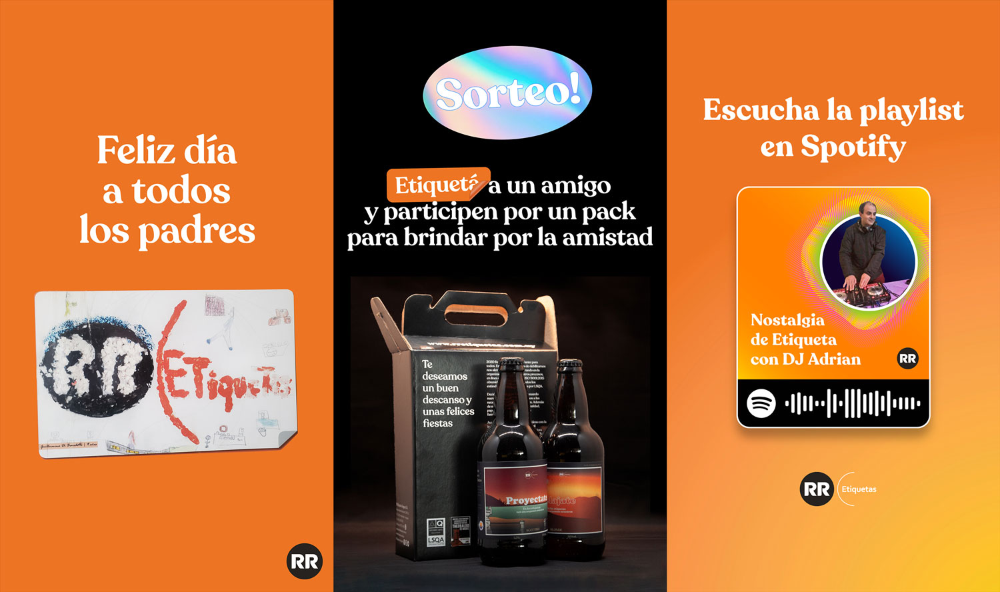
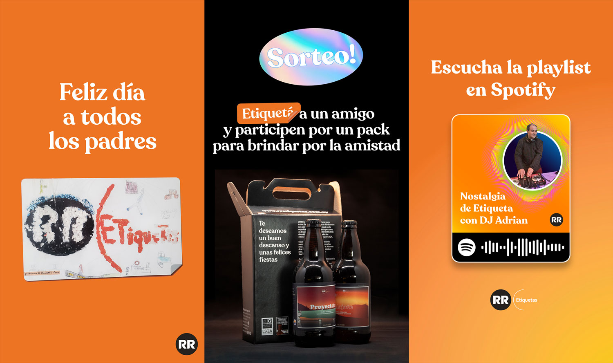
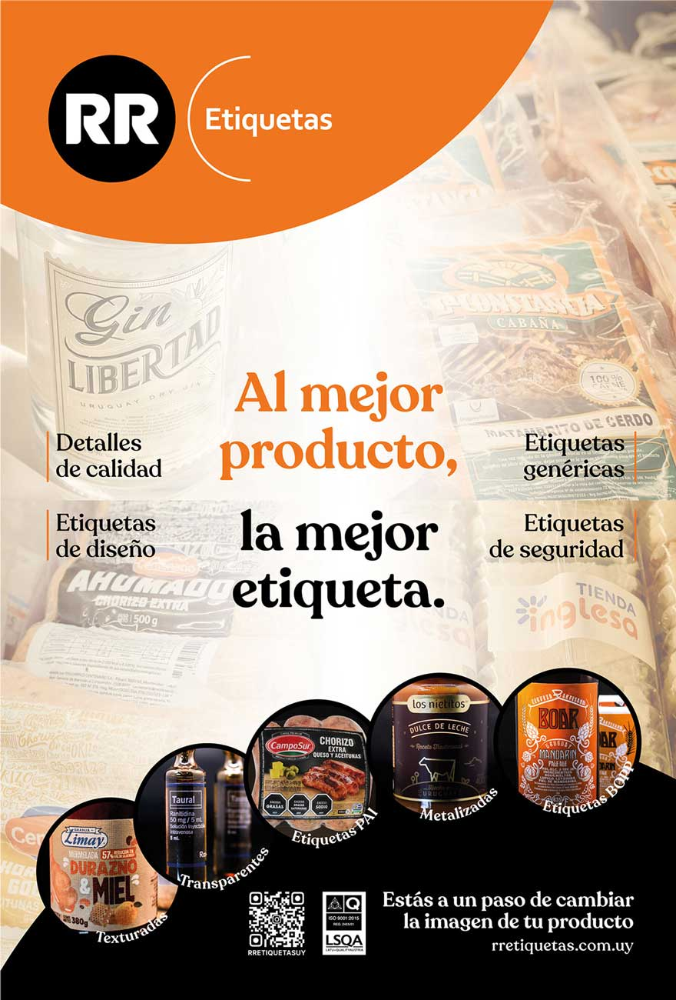

Diseño de identidad y comunicación
Diseño web, fotografía institucional, fotografía de producto, diseño de comunicación en redes sociales, diseño editorial, desarrollo de material y papelería institucional.
#Branding, marca, institucional, presencia, imagen, web.
Diseño de imagen en redes sociales.
 

Publicidad de página completa para revista impresa del rubro carne y alimentos.

Fotografía institucional y de producto.


Diseño de producto en imprenta
Regalo empresarial que consta de una caja con 2 cervezas artesanales. Se diseñaron las etiquetas de las cervezas y el diseño de la caja bajo el concepto de enviar deseos de tranquilidad y proyección al futuro, ya que terminaba el primer año de pandemia y se trabajaba en incertidumbre constante.
Las ilustraciones en las etiquetas muestran paisajes de Piriápolis y la Sierra de Minas mediante una selección de colores cálida que busca transmitir esa sensación de calma, siendo además, lugares paradigmáticos de nuestro país para quien busca relajarse.


Diseño de etiqueta para regalo a proveedores y empleados.

Diseño de producto publicitario, fixture del mundial.
¿Como sería un fixture hecho por una imprenta de etiquetas? Siguiendo la tradición de las imprentas en Uruguay diseñamos un producto interactivo, entre álbum de figuritas y fixture, para celebrar una nueva copa del mundo. El producto es un políptico de doble cara que incluye una hoja de stickers con las banderas de los países participantes con el objetivo de que se utilicen para completar los resultados del campeonato.

Diseño gráfico para producción y pre-prensa en flexografía.
Diseño de etiquetas, marcas y productos para clientes con estrictos controles de calidad.